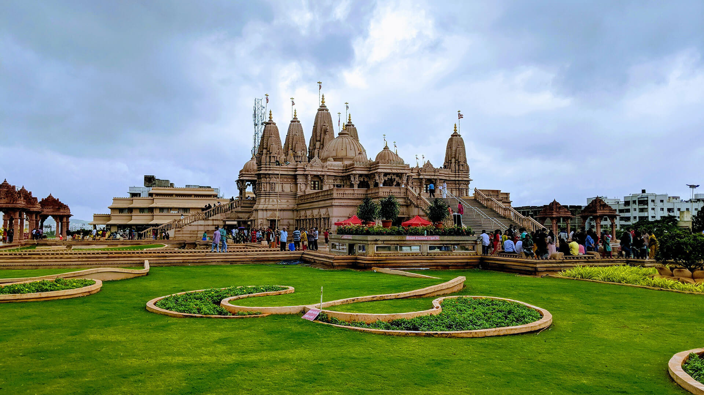

Khadakwasla Dam is a dam on the Mutha River 21 km (13 mi) from the centre of the city of Pune in Maharashtra, India.[1][2] The dam created a reservoir known as Khadakwasla Lake which is the main source of water for Pune and its suburbs.
★★★★★
khadakwasla
Rajgad (literal meaning ruling fort) is a Hill region fort situated in the Pune district of Maharashtra, India. Formerly known as Murumbdev, the fort was the first capital of the Maratha Empire under the rule of Chhatrapati Shivaji for almost 26 years, after which the capital was moved to the Raigad Fort.[1] Treasures discovered from an adjacent fort called Torna were used to completely build and fortify the Rajgad Fort.
★★★★☆

Swaminarayan Mandir
It appears you're asking for information about the Swaminarayan Temple. Swaminarayan temples, also known as Mandirs, are places of worship for followers of the Swaminarayan faith, which is a Hindu denomination